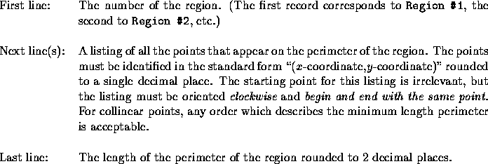

| Moth Eradication |
Entomologists in the Northeast have set out traps to determine the influx of Jolliet moths into the area. They plan to study eradication programs that have some potential to control the spread of the moth population.
The study calls for organizing the traps in which moths have been caught into compact regions, which will then be used to test each eradication program. A region is defined as the polygon with the minimum length perimeter that can enclose all traps within that region. For example, the traps (represented by dots) of a particular region and its associated polygon are illustrated below.
You must write a program that can take as input the locations of traps in a region and output the locations of traps that lie on the perimeter of the region as well as the length of the perimeter.
The input file will contain records of data for several regions. The first line of each record contains the number (an integer) of traps for that region. Subsequent lines of the record contain 2 real numbers that are the x- and y-coordinates of the trap locations. Data within a single record will not be duplicated. End of input is indicated by a region with 0 traps.
Output for a single region is displayed on at least 3 lines:

One blank line must separate output from consecutive input records.
3 1 2 4 10 5 12.3 6 0 0 1 1 3.1 1.3 3 4.5 6 2.1 2 -3.2 7 1 0.5 5 0 4 1.5 3 -0.2 2.5 -1.5 0 0 2 2 0
Region #1: (1.0,2.0)-(4.0,10.0)-(5.0,12.3)-(1.0,2.0) Perimeter length = 22.10 Region #2: (0.0,0.0)-(3.0,4.5)-(6.0,2.1)-(2.0,-3.2)-(0.0,0.0) Perimeter length = 19.66 Region #3: (0.0,0.0)-(2.0,2.0)-(4.0,1.5)-(5.0,0.0)-(2.5,-1.5)-(0.0,0.0) Perimeter length = 12.52